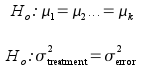

Introduction - using variances to compare means
The Analysis of Variance (ANOVA) is one of the real workhorses of biostatistics. ANOVA is used to test for differences in means between groups, just like two-sample t-tests do, and if we apply ANOVA to a two-group comparison it gives identical results to a t-test. Unlike a t-test, ANOVA can also be used to compare among multiple means simultaneously, so it's more often used to analyze experiments that have more than two treatment levels.
Although the name seems to imply that we're comparing variances between groups, in fact we use ANOVA to test a null hypothesis of no difference between group means. The null hypothesis for an ANOVA that compares two group means can be expressed as:
Ho: μ1 = μ2
just like a two-sample t-test.
We will be working with the simplest ANOVA designs, in which we have a single variable identifying groups to be compared, and a single response that has been measured - this kind of design is called a one-way ANOVA. More complicated possibilities can be used within an ANOVA framework, in which more than one kind of experimental treatment is tested (factorial ANOVA), or more than one response variable is measured (multivariate ANOVA, or MANOVA), but these are complications that are covered in more advanced classes.
We'll start with the simplest possible ANOVA, in which we are comparing just two means. We can also analyze a two-group experiment with a t-test, so we'll compare how the t-test assesses significance of differences, and compare that to the ANOVA approach.
The t-test approach to detecting differences at the population level
|
Consider this data set, which gives the maximum breadth of Egyptian skulls recovered from tombs of the Early Predynastic period (ca. 4000 BC), and of the Roman period (ca. 150 AD). The means are indicated by the blue dots, and breadths of individual skulls are gray dots. You can see that the means are not identical, but we need to test if they are different enough to indicate a population-level difference between the periods. In other words, we need to test the null hypothesis of no difference between the periods: Ho: μearly predynastic = μroman |
|||||||||||||
|
A t-test approach to testing this null hypothesis is based on the tobs test statistic. To calculate tobs we divide the difference between means by the standard error of the differences to obtain a t-value. Doing so would give us a t-value of 3.37, indicating there are 3.37 standard errors between the means. If the null is true there is no difference at all between the population means, so we need to know the probability of getting 3.37 standard errors between sample means when there is no difference between population means. |
||||||||||||
|
To get a p-value for tobs we need to compare the tobs to a t distribution with the correct degrees of freedom. There are 29 early predynastic skulls and 30 Roman skulls, so we have 59-2 = 57 degrees of freedom. The p-value for a t-value of 3.37 with 57 df is 0.000677 + 0.000677 = 0.001354. With a p-value of 0.001354 we reject the null, and conclude skulls had different breadths in the two periods. No surprises - t-tests are old hat for you by now, right? |
|||||||||||||
|
You know by now that the observed t-value is the number of standard errors between the means. It might help to think of what that the t-value tells you as being a signal to noise ratio. The numerator of the tobs statistic is the difference between means we are trying to detect (the signal), and the standard error is a measure of random sampling variation (the noise that prevents us from measuring the amount of difference between means exactly). The term was originally used to address the problem of receiving transmissions of radio signals, which are subject to interference from all sorts of unpredictable things (solid objects in the way, electromagnetic fields, atmospheric conditions, etc.). The "noise" was static that made it difficult to hear the sounds being transmitted - literally, a noise that drowns out the signal. Applied to statistics, we use the term "noise" to mean any random, unpredictable variation that interferes with our ability to measure the parameters we're interested in. |
|||||||||||||
|
|
To give you an idea of what this means, we'll use the analogy of trying to detect the content of the three images to the left with different amounts of random noise added to them. Next to each picture is the analogous pair of population distributions of maximum breadths of skulls for the Roman (red dotted line) and early predynastic (solid blue line) periods. The first image has so much random noise added to it that you may not be able to see the picture at all - this is a case of a signal being nearly completely obscured by noise, such that the signal is weak compared to the amount of noise in the image. This is analogous to what we face when the amount of difference between population means is small compared to individual, random variation. Since randomly sampling from these populations will often give us means that are close together, this leads to low t-values and retained null hypotheses, even when the null hypothesis is false and there is an actual difference to detect. What kind of error would we be making if we fail to reject the null when it's false? Click here to see if you're right. The middle version is better - less noise, easier to see the image, but still not very distinct. This is the situation we're in when we're testing for differences between means that are only moderately large compared with the individual-level, random variation in the data. We will often be able to detect the difference, but sometimes random sampling gives us means that are close together, such that the difference in sample means isn't big enough to be considered statistically significant. We will retain the null less often than the first case, but Type II errors will still happen fairly often. Lastly, the bottom version is the best - lots of signal, low noise, and it's easy to see this is a picture of the Mona Lisa. This is the situation we're in when we're trying to detect a difference in means that's big compared with individual, random variation. Given how little overlap there is between the distributions for the two periods, it's very unlikely that we'll get a mean for Roman that's near the mean for early predynastic. |
||||||||||||
The t-test approach, then, is to express the difference between two means as a signal to noise ratio, and then to use a p-value to decide whether the signal is strong enough to treat as real, in spite of the noise.
The ANOVA approach to detecting differences at the population level
The ANOVA approach will also generate a signal to noise ratio as its test statistic, but it will be based on a different way of measuring differences between means. ANOVA treats each skull's maximum breadth as the result of two different processes:
- a) a fixed, predictable effect of the period the skull comes from - represented by the mean for the period
- b) the individual, random variation of the skulls around the group mean - represented by the difference between each skull breadth from the mean of the period it comes from
Both of these different contributors to the data values (called sources of variation) is measured using a variance calculation. If you recall from the first couple of weeks of class, the formula for variance is:
The numerator of a variance calculation is called the sums of squares, which is the part of the calculation that actually measures variability - differences between a group mean (x̄) and individual data values (xi) are squared, and then summed across all of the data values. The denominator is degrees of freedom, which is based on the sample size (n), but with a deduction for any statistics that have to be estimated to calculate the variance - since the mean has to be estimated to calculate the variance, df is sample size minus 1. Dividing by degrees of freedom makes variance an average squared difference between data points and their mean.
To get variances, therefore, we need a sum of squares and a degrees of freedom for each source of variation (between periods, and individual variation within periods) so we can compare them using a signal to noise ratio.
Partitioning variance - sums of squares
We will start with calculations for sums of squares. The basic approach is illustrated in the graph below. The two horizontal lines are the mean maximum breadths for each period. The data points for each period are connected to the means with red lines.
Partition of the total sums of squares
| Source | SS |
|---|---|
| Period |
304.7 |
| Error |
1537.0 |
| Total |
1841.7 |
Set the amount of difference between means:
The Total sums of squares (SST) listed in the last row of the table is like the numerator of the variance formula - it is based on variation around the mean of all the data (called the grand mean), without reference to the period the skull was measured in. This total is not used in our test of differences between periods, but it is a measure of all of the variation in the data that is partitioned (that is, divided up) into the two sources of variation we are interested in.
The Period sums of squares (or more generally, the groups sums of squares, SSG) is based on variability of the period means around the grand mean. To the extent that the group means are far apart from one another they will also be far from the grand mean, so variation of group means around the grand mean measures differences between groups.
The Error sums of squares (SSE) is based on variation of individual skulls around the mean of the period it belongs to.
You can change the amount of difference between the means by clicking on the up or down arrows. The total sums of squares is held constant. It is also true that SST is equal to SSG + SSE, so as the amount of difference between the groups is increased the SSE gets smaller until SSG is equal to SST, and SSE goes to zero. Likewise, if the amount of difference between the groups declines to 0, all of variation is error variation, and SSE equals SST.
The calculations of SST, SSG, and SSE are done like
so:
|
Three sources of variation in the skulls data |
|||
|---|---|---|---|
|
|
Total sums of squares |
Groups sums of squares |
Error sums of squares |
|
Graphical illustration: |
|||
|
What it measures: |
Raw measure of variation to be partitioned - individual skulls
varying around the grand mean |
Measure of the contribution of period means to variation in skull measurements - period means varying around the grand mean |
Measure of individual, random variation in skulls - individual skulls varying around period means |
|
How it is calculated: |
Subtract the grand mean (x with two bars) from each individual skull's maximum breadth. Each difference is squared, and the squared differences are summed. |
Subtract the grand mean from each period mean (x̄j) and square the differences, once for each data value, and sum them. Since the difference between period mean and grand mean is the same for each skull in a period, this is equivalent to multiplying the squared difference by the number of skulls in the period - thus, the formula is expressed as the differences between group means and the grand mean multiplied by the sample size for the group, nj. |
Subtract the period mean (x̄j) from each individual skull's maximum breadth, square the differences, and sum them. xi,j refers to the i'th data point in period j. |
|
For the skulls data, equal to: |
1841.7 |
304.7 |
1537.0 |
Sums of squares are additive, meaning that SST = SSG + SSE. You can confirm for yourself that 1841.7 = 304.7 + 1537.0
At this point we have partitioned the variation in the data (SST) into a part that is due to predictable differences between the periods (SSG) and a part that is due purely to unpredictable individual random variation (SSE). Now we need degrees of freedom to go along with each of these sums of squares.
Partitioning variance - degrees of freedom
The DF term needed for each of our sources of variation are:
- Total: The SST has degrees of freedom just like the formula for variance says it should, n-1. This is the total sample size (n) minus 1. With this data set, this is equal to 59 skulls minus 1 = 58. We refer to this as dftotal.
- Groups: SSG has degrees of freedom of number of groups minus one, or k - 1. There are two groups being compared, so dfgroups is 1.
- Error: SSE has degrees of freedom of sample size minus the number of groups, or n - k. With 59 skulls and 2 groups dferror is 57.
Like sums of squares, degrees of freedom are additive, such that dftotal = dfgroups + dferror, or 59 = 2 + 57.
In ANOVA, variances are called Mean Squares
Now that we have an SS and a DF for each source of variation, we can calculate a variance for each source. In ANOVA we call SS/df the mean squares, but it could just as accurately be called a variance.
The formulas for each MS are:
|
The total MS for this example is 1841.7/58 = 31.75. This value isn't used in the hypothesis test, so statistical software often does not report it - you'll see that MINITAB doesn't report it in its ANOVA output. |
|
The groups MS for this example is 304.7/1 = 304.7. |
|
The error MS for this example is 1537.0/57 = 26.96 |
Sums of squares and degrees of freedom are additive, but mean squares are not (that is, MStotal is not MSgroups+MSerror).
A test statistic - F ratio from MS
We now have all the parts that we need to test for differences between period means - now we just need a test statistic. Since MS are variances, we can use the ratio of MSgroups to MSerror as an F ratio, and test if they are different using an F test, just like we have been doing when we test HOV in a two-sample t-test. Before we do the test, let's consider why this is a test of differences between period means.
Random sampling will always have some effect on the sample means, and thus the variation between groups that is the basis for MSgroups is actually due both to real differences between the period population means (which we'll call fixed effects), and to random sampling variation. Random sampling variation happens because of random variation among individuals, so we can think of MSgroups as actually being:
- MSgroups = Fixed effects of differences between period means + Random, individual variation
MSerror is expected to reflect only individual random variation - that is, it includes the second part of SSG, but not the first part. We can think of MSerror as being only:
- MSerror = Random, individual variation
Notice that the only difference between MSgroups and MSerror is that MSgroups is affected by actual differences between population means.
Under the null hypothesis, there is no actual difference between population means for the two periods. If this is true, then the fixed effects are equal to 0, and all that's left for both MSgroups and MSerror is the same individual, random variation. If both terms measure the same thing, they should be equal to one another.
We have already learned to compare variances with an F test when we learned about tests of HOV. Recall that an F test tests the hypothesis that two population variances are equal by dividing one variance by another, and then comparing the ratio of variances to an F distribution to obtain a p-value. Just like with our HOV test, we're hypothesizing that if the null is true and there is no difference between period means at the population level, then MSgroups will equal MSerror, and thus MSgroups / MSerror should equal 1.
On the other hand, if the null hypothesis if false and there is an actual difference between means, the fixed effects of differences between group means will be bigger than 0. Then MSgroups will include both the random variation that MSerror includes, plus the fixed effects of period. So, if there are real differences between the periods, when we divide MSgroups / MSerror we should get a value greater than 1.
Our test statistic, then, is Fobs, calculated as:
In our case, Fobs is equal to 304.7/26.96 = 11.30. With an Fobs greater than 1 there does seem to be more variation between period means than there is within periods. Now we need to know the probability of getting an Fobs of that size by chance when the null hypothesis is true, and the population means are the same between periods.
P-values from F ratios
Once we have a test statistic, Fobs, we need a sampling distribution to tell us the probability of obtaining a value as big or bigger by chance if the null is true, which is the F-distribution.
|
Recall from our HOV tests that the F distribution is defined by the df for both of the variances used, and since the F ratio from an ANOVA is always MSgroups/MSerror, the numerator df is the groups df (1 for this analysis), and the denominator df is the error df (57 in this analysis). If there are actual differences between periods we expect MSgroups to be bigger than MSerror, so we're only interested in the upper tail of the F-distribution; that is, ANOVA uses one-tailed F tests. The p-value is the area under the F distribution that falls above Fobs. With our Fobs of 11.3, the p-value is equal to 0.001389. Based on this small p-value, we conclude that the null hypothesis of no difference between periods is rejected - the difference between periods observed is statistically significant. |
The ANOVA table
Now that you understand the basic principles, let's look at the traditional method of presenting the results of this test.
An ANOVA is usually presented in a standard format called the ANOVA table. The ANOVA table for the analysis we just completed, above, looks like this:
Source DF Adj SS Adj MS F-Value
P-Value
period 1 304.7 304.73 11.30
0.001
Error 57 1537.0 26.96
Total 58 1841.7
The first row is a set of labels for the columns, which are:
- Source - a label for the source of variation the row is measuring
- DF - degrees of freedom for each source of variation
- (Adj) SS - the sums of squares for each source of variation (don't worry about the "Adj" part - it means "adjusted", but adjustments are only applied for more complicated designs than we will use in this class)
- (Adj) MS - the mean squares for each source of variation (again, ignore the "Adj")
- F-value - the Fobs
- P-value - the p-value for the test of Fobs
Each row is a different source of variation. They are:
- period - the groups source of variation. MINITAB labels the groups by the name of the name of the variable used to identify the groups.
- Error - the random variation between skulls within each group.
- Total - the total variation in the data, which is partitioned into period and error terms
If you look at the contents of the table, you'll see that it's just organizing the various quantities we calculated above. For example:
- The period row gives the groups DF (1), groups SS (304.7), and groups MS (304.73)
- The Error row gives the error DF (57), error SS (1537.0), and error MS (26.96)
- Since Fobs is MSgroups/MSerror, we calculate a single value from two rows in the table. Fobs is a test of differences between period means, so it's placed in the period row.
- The p-value pertains to Fobs, so it is also placed in the period row.
- MStotal isn't used in the test, so it isn't reported. The Total row is primarily presented so that you can verify that total DF is the sum of period and error df, and that total SS is the sum of period and Error SS (this may seem a little silly - we can probably count on MINITAB to be able to add numbers properly - but there are cases in which SS aren't additive, but again these only appear in more complex designs than we're considering).
So, the ANOVA table is a way of organizing a fairly complicated set of calculations into a compact form that's easy to interpret, once you know how it's put together.
When the null is true
You have now seen an ANOVA applied to a case with a large, highly
significant difference between means. It is also helpful to think
about what ANOVA results look like when the null hypothesis is true,
and there is no actual difference in population means.
ANOVA table
| Source | df | SS | MS | F | p |
|---|---|---|---|---|---|
| Period | 1 |
304.7 |
304.7 |
11.3 |
0.0014 |
| Error | 57 |
1537.0 |
26.9 |
|
|
| Total | 58 |
1841.7 |
|
|
|
When the null hypothesis is true the only reason sample means for the two periods differ is random chance. If this is true, two random samples from a population with a maximum skull breadth equal to the grand mean of 133.9. The graph on the left shows one set of two random samples (one for each period), with the resulting ANOVA table. The grand mean is indicated with a horizontal gray line labeled "GM", and the mean for each group is a red bar that extends from the grand mean to the group mean for the sample. The p-value will be colored red if it is below 0.05 to help you see when the difference is statistically significant.
If you hit the "Randomize" button you will get a new set of random data for each group. When a pair of random samples results in large differences between the groups the red bars will be big - big differences between groups leads to large SS and MS for Period compared with the unexplained Error variation. This will produce a large F-ratio, and a p-value less than 0.05.
Just like what you saw when you simulated the null hypothesis for a two-sample t-test, you would expect to get a p < 0.05 about 5% of the time, or once every 20 times you hit the "Randomize" button.
Notice that when p is greater than 0.05 the means are relatively close together, compared to the amount of variation around them. Because of this, the Period sums of squares and mean squares are small compared with the error SS and MS, which results in an F ratio (MSPeriod/MSError) that is small. In those approximately 1 in 20 times when p is less than 0.05, the means are farther apart, such that the Period SS and MS are big compared with the error SS and MS, which results in a big F ratio.
Now compare those randomly generated results with a real example - we are still comparing maximum skull breadth for two periods, but now we're comparing early predynastic to late predynastic periods, which are not nearly as different as early predynastic was from the Roman period.
You can see that this time the means are very close together, and the groups sums of squares is thus much smaller. Comparatively, there is a lot of random variation compared with this small amount of difference between means. Not surprisingly, when we do all of the calculations and assemble the ANOVA table:
Source DF Adj SS Adj
MS F-Value P-Value
period 1 3.40
3.396 0.14 ...see below...
Error 58 1445.54 24.923
Total 59 1448.93
the F-ratio is much smaller for this comparison: Fobs = 3.396/24.923 = 0.14. We can get the p-value for this comparison by comparing Fobs of 0.14 to an F distribution with 1 numerator and 58 denominator degrees of freedom.
|
The area under the curve from the observed F of 0.14 and above gives us a probability of 0.713. With a p-value over 0.05 we retain the null of no difference between the periods. This amount of difference between means can easily occur by chance when the null is true, so we won't consider the early and late predynastic periods to be different. |
So far all we've done is learn how to do the same analysis using ANOVA that we could have done more simply with a t-test, which might make you wonder why we went to all the trouble.
The reason for learning ANOVA is that the general approach is a much better basis for analyzing complex designs. For this class we'll keep it simple - the only complication we'll consider is the case in which we're comparing more than two groups to one another. We have now used three different periods, but only have tested early predynastic to Roman, and early predynastic to late predynastic periods. We still haven't compared late predynastic to Roman skulls, which we could do by doing one more ANOVA with those two groups, but it's not a good idea - there's a problem with doing multiple comparisons among three or groups two at a time, called the multiple testing problem.
The multiple testing problem
As you know by now, the α-level is the threshold value we compare p against to decide if we have a significant test result or not, and we traditionally use 0.05 as the α-level. But remember, the α-level is an error rate - it's the probability of rejecting the null hypothesis when it's true. Rejecting a true hypothesis is a mistake, and when we set α to 0.05 we're saying we're willing to make this mistake 5% of the time when we test true null hypotheses. Rejecting a true null is a false positive, which we also call a Type I error, so α is our Type I error rate.
So, each time we test a null hypothesis that's true, we have a probability of making a Type I error of 0.05. If we conduct multiple tests, we take this chance of obtaining a false positive result with each test, and the chance of error accumulates. With three different comparisons, between early predynastic vs. late predynastic, early predynastic vs. roman, and late predynastic vs. roman, our chances of one or more Type I errors is bigger than 0.05, but how big is it?
- If we use the traditional α-level of 0.05, we have a probability of 0.05 of making a mistake with each test
- The probability of not making a mistake on each test is therefore (1-0.05) = 0.95
- The probability of making no mistakes in three tests is just the product of the probability of making no mistakes in a single test - that is, (0.95)(0.95)(0.95), or (0.95)3
- If the probability of no mistakes in three tests is (0.95)3, then the probability of one or more mistakes is 1 - (0.95)3 = 0.14
This means that even though we test each pair of means at α = 0.05, by the time we've finished three tests we actually had a probability of 0.14 of making one or more Type I errors. This inflation of the probability of a false positive with multiple tests is called the multiple testing problem.
ANOVA protects against the multiple testing problem in two ways:
- It conducts a single initial F test for significant differences among group means, called an omnibus test
- If and only if the omnibus test is significant, it uses a post-hoc procedure to test for differences between pairs of group means in a way that prevents an inflation of Type I error
Let's look at these two methods one at a time.
An omnibus test of differences between three groups using ANOVA
Extending ANOVA to three groups is very simple - the calculations are all the same as for a two group ANOVA, we just have one more group to apply the calculations to.
The null hypothesis with three (or more) groups is like the null hypothesis with two, we just add additional population mean symbols:

The second way of expressing the null uses variances instead of means (the first variance is labeled "treatment", which is another way of referring to the groups). Since we use an F ratio of mean squares to test for differences among the means, this is also an acceptable way to express the null hypothesis.
|
To begin the analysis, it's a good idea to start with a suitable graph. From this interval plot, it looks like the Roman skulls have bigger maximum breadths than the other two periods, but the early and late predynastic periods may not be different from one another. |
|
This video shows you how an ANOVA on three groups is done. You'll see that there's nothing really different from how we proceeded with only two groups, we just have an additional group mean to use when we calculate SSgroups. Note that the groups SS is illustrated a little differently than before (but the same way as in your book). Now, rather than calculating a difference between a group mean and the grand mean and then multiplying it by the number of data points in the group, the video shows the difference between group mean and grand mean calculated for each data point, which would then be summed together. Adding the same value 30 times is the same as multiplying the value by 30, so it makes no difference which way the groups SS is calculated. |
The ANOVA table for these data is here - if you hover over a value in the table a box will appear that explains how it is calculated. Make sure you understand where each entry in the table comes from.
|
SourceThe source of
variation column
|
DFThe degrees of
freedom column
|
SSThe sums of
squares column
|
MSThe mean squares
column
|
FThe Fobs
column
|
PThe p-value column
|
|---|---|---|---|---|---|
|
periodThe row with
the test of differences between periods
|
2DFgroups
= number of groups - 1
|
373.2SSgroups
= sum[group sample size x (group means - grand mean)2]
|
186.6MSgroups
= SSgroups / DFgroups
|
7.13Fobs = MSgroups/MSerror
|
0.001P-value - the
probability of Fobs if the null is true
|
|
ErrorThe row with
individual random variation
|
87DFerror
= sample size - number of groups
|
2275.7SSerror
= sum(data values - group means)2
|
26.16MSerror
= SSerror/DFerror
|
||
|
TotalThe total
variability in the data to be partitioned
|
89DFtotal
= sample size - 1
|
2648.9SStotal
= sum(data values - grand mean)2
|
Based on this table, are there significant differences between the periods? How do you know?
Click here to see if you're right.
At this point, we have three periods, and only one F ratio with one p-value. What can you tell about the differences between periods? Do you know which periods are different from one another?
Click here to see if you're right.
We have now gotten as far as conducting the omnibus test for differences between the periods. There is only one p-value in the table, so we haven't increased our Type I error rate over 0.05, even though we have three group means being compared. That's the good news. The bad news is that we still don't know which periods are different from one another, but we'll fix that problem by conducting a post-hoc procedure called Tukey's MSD.
Post-hoc procedures - Tukey's MSD
Post-hoc procedures are comparisons of pairs of group means conducted after obtaining a significant omnibus test in an ANOVA. They are done in a way that protects against the multiple testing problem, but they are only effective in doing so if they are used following a significant ANOVA.
There are several different post-hoc procedures available in MINITAB, but we will focus in this class on one that seems to work well and is widely used, called the "Tukey Minimum Significant Difference" (or Tukey MSD for short).
Tukey tests look just like t-tests in MINITAB - there is a difference between means, which is divide by a measure of sampling variability to obtain a t-value, and then this test statistic is used to calculate a p-value using a bell-shaped sampling distribution. There are only a couple of differences:
- The measure of sampling variation used is based on the MSerror from the ANOVA instead of using a pooled variance calculation.
- p-values are obtained by comparing Tukey's test statistic to the Studentized range distribution instead of the t-distribution.
The Studentized range distribution is a bell-shaped curve like the t, but its shape is affected by the number of comparisons being conducted. Specifically, the Studentized range distribution requires bigger differences between means in order for them to be considered significant, compared to a t-distribution. The amount of difference needed increases with an increase in the number of groups being compared. If a bigger difference is needed to reject the null, then there will be fewer positive tests, and thus also fewer false positives. Tukey's test thereby protects the α-level, in that the overall probability of a false positive across all the means compared is still 0.05, no matter how many groups are compared.
Let's look at how MINITAB presents ANOVA and Tukey results. After getting a significant omnibus test for differences among periods, we get Tukey results that look like this:
Tukey Simultaneous Tests for Differences of MeansDifference Difference SE of Adjusted
of Levels of Means Difference T-Value P-Value
late_predyna - early_predyn 0.48 1.32 0.36 0.931
roman - early_predyn 4.55 1.33 3.41 0.003
roman - late_predyna 4.07 1.31 3.11 0.007
Each row in this table is a different comparison between means - the comparison used is shown under "Difference of Levels". The first row is a difference between late predynastic and early predynastic periods, and the difference is 0.48 mm. The standard error of the difference is based on the MSerror and the sample sizes of the two groups being compared - the MSerror comes from the ANOVA table and is the same for all comparisons, but there are 29 skulls in the early predynastic period, 31 in late predynastic, and 30 in Roman, so the standard errors are slightly different. The t-values are differences of means divided by standard errors. The p-value is obtained by comparing the t-values to the Studentized Range distribution, which is like a t-distribution that accounts for the number of comparisons being made.
Since Tukey's procedure uses a probability distribution that accounts for the number of tests we're running, the p-value can be interpreted as always - if p is less than 0.05 the difference is significant, and having multiple "adjusted" p-values doesn't inflate our Type I error rate.
Another way that MINITAB uses to illustrate differences between means from a post-hoc procedure is called a compact letter display. For example, if you look at the grouping information output for this test, you'll see:
Grouping Information Using the Tukey Method and 95% Confidenceperiod N Mean Grouping
roman 30 136.167 A
late_predynastic 31 132.097 B
early_predynastic 29 131.621 B
Means that do not share a letter are significantly different.
As the final line in this block of output says, groups that do not share a letter are significantly different. This means that the Roman period is different from both early and late predynastic, but early and late predynastic periods are not different from one another.
Assumptions of ANOVA
ANOVA has similar assumptions to a two-sample t-test - it assumes the data are normally distributed, and that the groups have equal variances. The HOV assumption in ANOVA applies to the amount of variation within each group that is being compared.
Normality
|
We will test the normality assumption in exactly the same way as we have done with t-tests, using AD tests and normal probability plots. The only difference is that we will often have three or more groups, so we have more normality plots to look at. Normality looks good in all three groups. |
Homogeneity of variances
The fact that we have more than two groups makes it impossible to test HOV using a single F test, so we need a new test. MINITAB offers Levene's test, which is able to test for differences among more than two group variances at a time. If you ever ran an HOV test and forgot to check the box for the "option" of using tests based on normal distribution, you have already seen a Levene's test. Like an F test, the null hypothesis for a Levene's test is that the variances are the same for the three periods, so a p-value over 0.05 means we retain the null and conclude that the variances are equal (that is, we pass the test if p is over 0.05).
Test for Equal Variances: maxbreadth versus
period
Null hypothesis All variances are equal
Alternative hypothesis At least one variance is different
Significance level α = 0.05
95% Bonferroni Confidence Intervals for Standard Deviations
period
N StDev
CI
early_predynastic 29 5.02433 (3.69852,
7.43954)
late_predynastic 31 4.96222 (3.20040,
8.33783)
roman
30 5.35037 (4.10198, 7.58388)
Individual confidence level = 98.3333%
Test
Method Statistic P-Value
Levene
0.23 0.794
You can see that the p-value is well over 0.05, so we pass the HOV test.
Next activity
We will gain experience in using and interpreting ANOVA by comparing the sizes of European cuckoo eggs found in the nests of several species of European songbird.